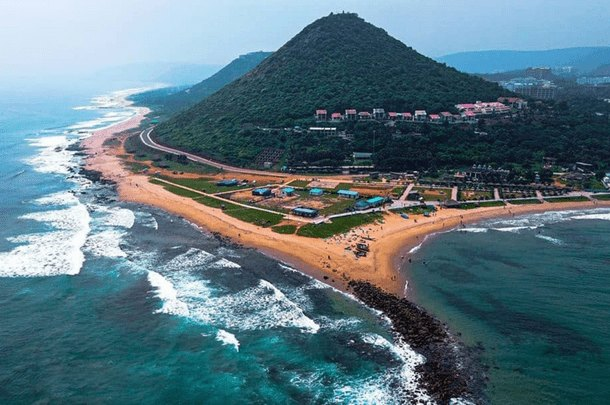

Vizag
vizag is a port city and industrial center in indian state of ANDHRA PRADESh 'on the bay of bengal.The average weather is 30/20 c
From 999
vizag is a port city and industrial center in indian state of ANDHRA PRADESh 'on the bay of bengal.The average weather is 30/20 c
From 999
Vijayanagaram, is a city and the headquarters of the Vizianagaram district in the Indian state of Andhra Pradesh.
From 150

Odisha is known for its beautiful climate and rich cultural heritage. Bhubaneswar is dubbed the Temple City.
From 150
Dhenkanal is a town and a municipality in Dhenkanal district in the state of Odisha, India.which is also a biggest railway station in odisha.
From 899
Bilaspur is a city located in Bilaspur District, state of Chhattisgarh. Bilaspur is the headquarters of the Bilaspur District and Bilaspur Division.
From 150
Which is in the state of Chattisgarh. Raipur is also the administrative headquarters of Raipur district
From 150
Gwalior is a major city in the central Indian state of Madhya Pradesh.It is known as the City of Music
From 150
Jhansi Junction is situated in the the state of madhya pradesh .which is having th e good historical background among the whole state.
From 999
Agra is a city on the banks of the Yamuna river in the Indian state of Uttar Pradesh, Delhi.it is also in seven wonders of the world
From 999

Delhi, is a city and a union territory of India containing New Delhi, the capital of India. Straddling the Yamuna river.
From 999
Kurukshetra is a city in the Indian state of Haryana. It is also known as Dharmakshetra and the "Land of the Bhagavad Gita".
From 999
Ludhiana is the most populous city in the Indian state of Punjab. The city has an estimated population of 1,618,879
From 999
Jalandhar is a city in the state of Punjab in India.And also it is the biggest city of PUNJAB. Jalandhar lies alongside the historical Grand Trunk Road
From 999
Lovely Professional University (LPU) is a private university located in Chaheru, Phagwara, Punjab, India.Which is also a top and best university in world
From 999